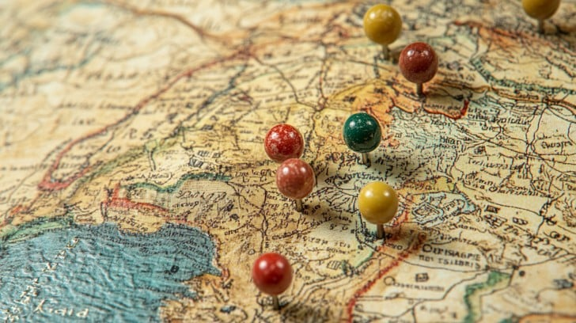
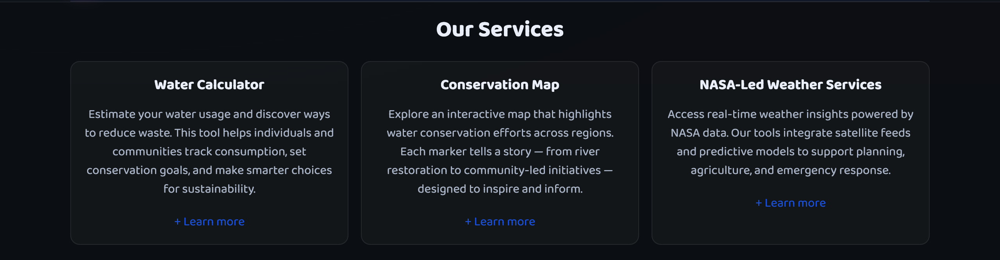
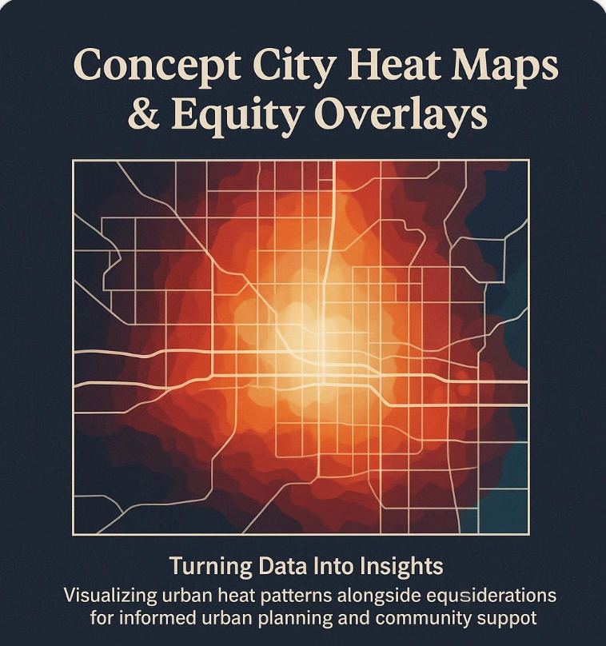
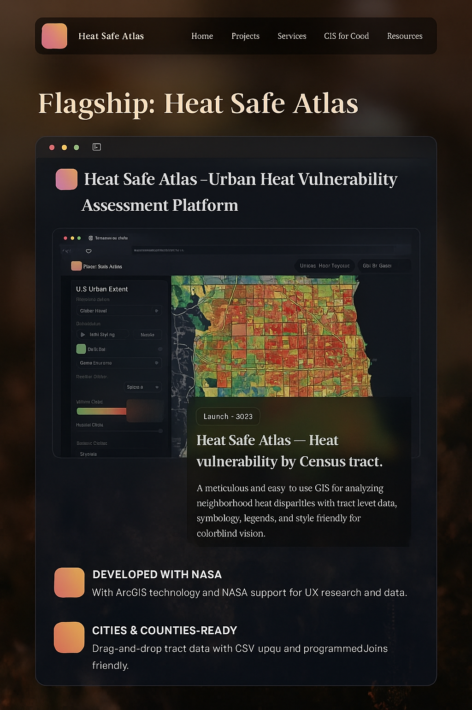
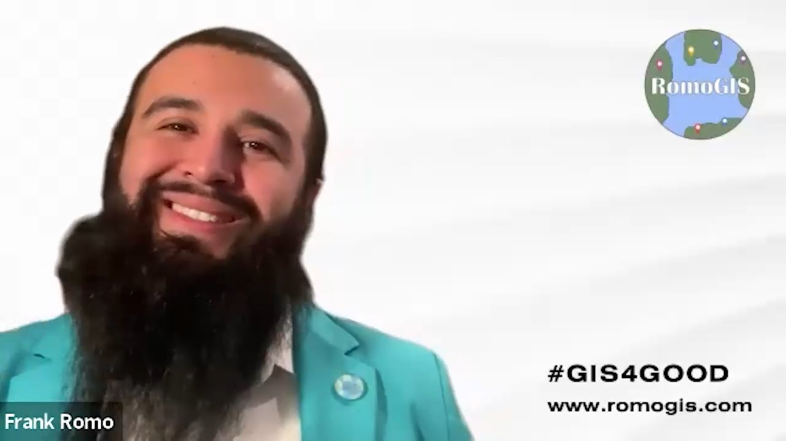

Projects that turn data into decisions
This living gallery showcases a flagship launch, bold concepts in the pipeline, and collaborations that set ethical standards.
This living gallery showcases a flagship launch, bold concepts in the pipeline, and collaborations that set ethical standards.
These tools are practical, accessible, and tuned for real-world decisions — water conservation, community mapping, weather resilience, and equity visualization.


A website tuned for decisions, not spectacle. Every interaction respects user needs and device realities. Accessibility and performance are baseline.
Screen reader parity, captions, transcripts, and keyboard controls baked in.
Lazy loading, disciplined assets, and minimal layout thrash — quick on real devices.
Version control, separated code/data, documented patterns, and smooth deploys.
Full-width background video, translucent text bubble, and accessible controls.
Water Calculator, Conservation Map, and NASA Weather — each with deep dives.
FAQ, Bulletin, Resources, Romo tribute, Sustainability, and Mapping for Good.
A fresh pipeline: a concept shaping up and a collaboration to set the bar high.

A city-scale platform prioritizing investments where it matters most. Equity overlays, routing, and community participation.

Reflect the philosophy of transparent storytelling and community outcomes. Build tools that travel and teach.

Blend NASA imagery, local datasets, and community inputs to prioritize cooling investments and guide routes to relief.
Direct residents to libraries, parks, splash pads, and centers.
Crowdsourced data ensures lived experience shapes the map.
Share approaches and lessons. Let good work scale and travel.

Teach teams to map with integrity: listen first, clarify questions, select ethical data, annotate with care, publish accessibly.
Community voices shape questions before data is gathered.
Consent, privacy, precision about uncertainty and risk.
Maps with captions, transcripts, and bilingual support.
Answers to common questions about HeatSafe Atlas, RomoGIS, and collaboration.
Priority setting and trust‑building across communities.
Data literacy and narrative power for the next generation.
Connecting insights to resources, accountability, and support.
Blend imagery, local datasets, and community voices to prioritize cooling investments.
Ethical GIS practice: listen first, clarify questions, select ethical data, annotate with care.
Assets, motion, and typography tuned for speed and clarity.
Stories from residents advocating for water resilience and housing justice.
This gallery evolves: flagship launch, pipeline concepts, collaborations, and new GIS-style cards. Every module adds substance, not noise.
Desert Drops strives for accessibility, performance, and community impact. Collaborations with ethical partners set new norms for civic tech.